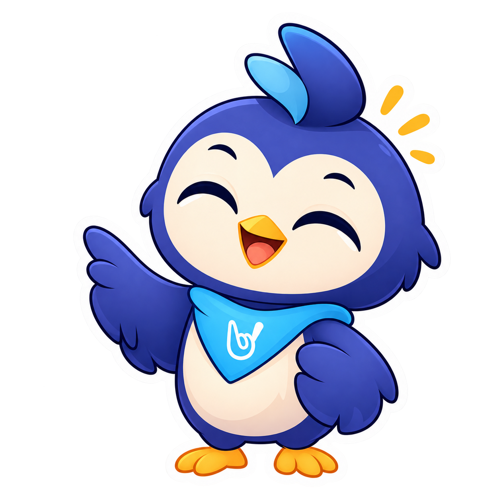

Yatharth
@dr-snope Lead Architect & ML EngineerFinal-year high schooler with an unhealthy obsession with code and systems. Handles the machine learning pipeline, math, and system architecture for MudraSetu.

ABOUT US
We're a group of students who came together with a shared goal — to make communication more accessible through technology.

We are a students with different interests, skills, and backgrounds, but we share a common passion for technology and its potential to make a positive impact on society. Our team is driven by curiosity, creativity, and a desire to learn and grow together.
To bridge communication gaps and create a more inclusive world using AI and web technology.
Different paths. Same goal.
Final-year high schooler with an unhealthy obsession with code and systems. Handles the machine learning pipeline, math, and system architecture for MudraSetu.

High schooler interested in technology and exploring new tools. I enjoy understanding how systems work under the hood and experimenting with different ways to solve problems and optimize code. For MudraSetu, I work on the back-end, focusing on camera processing and hand tracking to help connect real-time video with sign language predictions.

First high schooler with a passion for coding and design. I enjoy creating user-friendly interfaces and enhancing the user experience of our project. New to coding but have always been desparete to learn and explore new things. My contribution to MudraSetu is to make it visually appealing and easy to use for everyone.

First year high schooler with almost no experience in coding. I am interested in learning new things and exploring the world of technology. I am a quick learner and I am always willing to learn new things. My contribution to MudraSetu is to assist in the front-end development and design of the project.